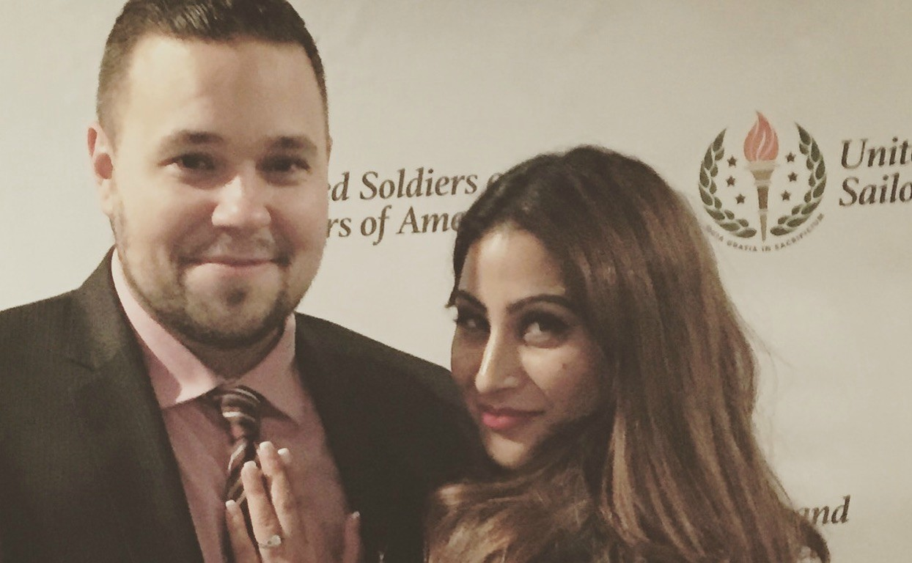
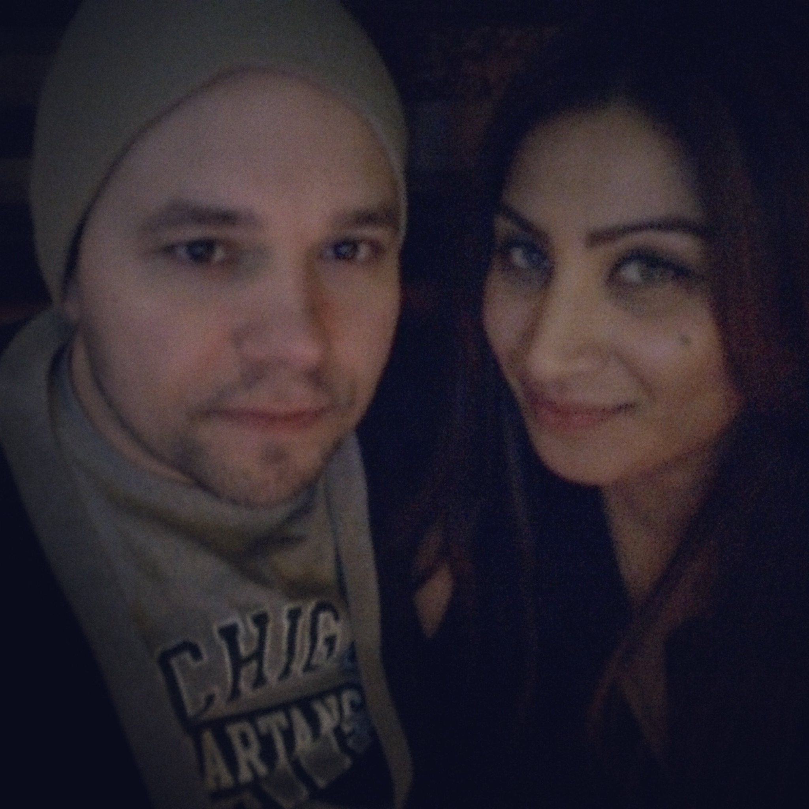
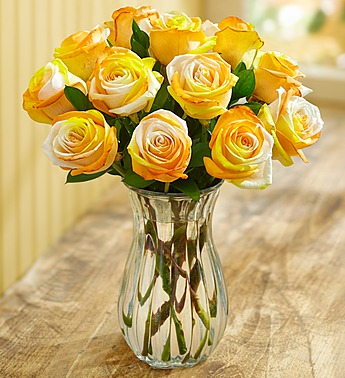
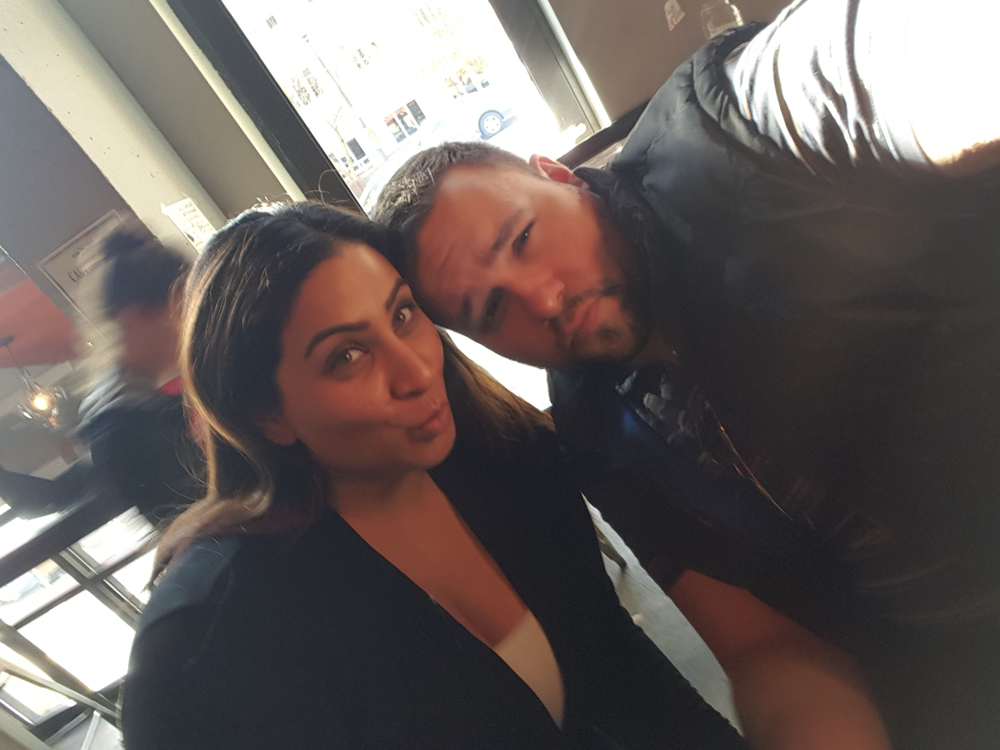

Together
A warm first image for the archive.
A wedding archive that opens with one confident image, quieter typography, and simple routes into the story, gallery, and weekend context.

A warm first image for the archive.

Place-based memory for the wedding weekend.

Works as a caption-first gallery pattern.

Small objects add texture without extra features.

This option makes the site feel like a small personal publication: one large image, restrained copy, and clear chapter links.
Recommended direction: combine Variant A's stronger first impression with Variant C's chapter-style navigation. Variant B is useful for the gallery page, but it feels too editorially heavy for the home page.